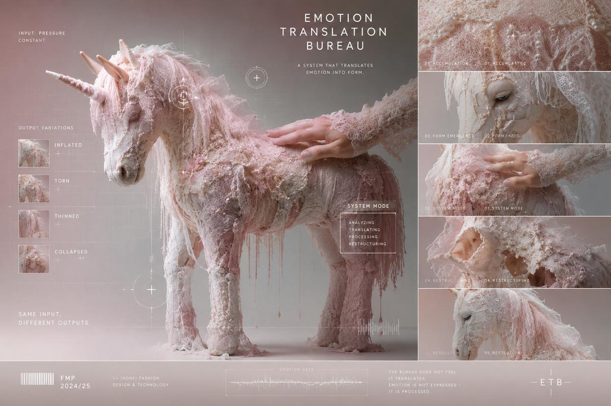

Final Major Project · Kingston University · 2025
ETB / SYNFEEL
"Can emotion be translated as a system rather than expressed as a feeling?"

01 — Project Definition
Emotion Translation Bureau (ETB) treats emotion not as something to be felt or expressed, but as something that can be translated and processed — like data moving through a system.
Most work dealing with emotion uses story, expression, or language as its medium. This project takes a different position: emotion may be processable data — translatable through sensory material and structural change rather than narrative or representation.
The central object of the film — a soft textile unicorn/horse form — functions not as a character but as an emotion container: a structure that receives input and produces varying outputs depending on its state.
"Film allows the system to be experienced temporally rather than statically — the time-based structure of cinema makes state change visible in a way no other medium can."
Academic Position
"This project situates emotion not as representation, but as a system of transformation."
The dual framing — ETB as academic research and SYNFEEL as brand/interface system — positions the work simultaneously as practice-based research and as a scalable design concept.
02 — Research Questions
Can emotion be translated into a non-linguistic system — one that operates through material structure rather than words or images?
Can emotional states be represented as structural changes — deformation, inflation, thinning, collapse — rather than as named feelings?
Is it possible to build a system in which the same input produces different outputs — mirroring how human emotion actually works?
These questions position the project at the intersection of affect theory, system design, and practice-based media research — a space rarely occupied by student experimental film work.
03 — Methodology
Method_01
Material-based Translation
Emotion is translated through textile — lace, silk, organza, pearls, fabric layers — treating texture as emotional data. Each material carries specific structural meaning rather than aesthetic value.
Method_02
System-based Thinking
Emotion is defined as state change, not feeling. The work operates on rule-based variation: given the same input pressure, the system produces different structural outcomes — mirroring how emotion actually functions.
Method_03
AI-assisted Production
Midjourney generates visual variants. Kling assists motion. CapCut structures the final film. AI is used as a variation-testing instrument — not as concept or author. The research question is human; the tool is computational.
Method_04
Practice-based Research
The methodology follows a cycle: production → analysis → revision → production. Each iteration tests whether the visual output successfully communicates the system logic rather than a narrative or emotional mood.
04 — The Film
Emotion Translation Bureau / SYNFEEL — Seowon Heo · Kingston University · 2025 · 8–10 min
05 — Film Structure
This is not a mood film. It is a system demonstration — each scene serves a specific structural function in proving that emotion can be translated as a rule-based process.
Texture Accumulation
Lace, thread, fabric, fibre accumulate gradually. The environment forms from material. No narrative, no character — only texture building toward structure. This is the data collection phase: raw emotional material entering the system.
Form Emergence
The horse/unicorn form slowly materialises from accumulated textile. This is not a character being born — it is a structural container being assembled. The system is taking shape.
Complete Form — Stable State
The textile horse exists in a complete, quiet form. This is not resolution — it is readiness. The system is prepared to receive input. The stability is temporary and conditional.
SYSTEM MODE — Same Input, Different Outputs
The register shifts. Grid overlay, scan UI, system text, and calibration elements appear. The film moves from poetic to analytical. The same hand pressure is applied repeatedly — but the system produces four entirely different responses:
Output_01
Inflated
Pressure accumulates without release. The structure swells beyond its original dimensions.
Output_02
Torn
Structural fibres exceed tensile capacity. Overload becomes visible fracture.
Output_03
Thinned
Emotional energy depletes. The structure becomes translucent, fragile, exhausted.
Output_04
Collapsed
Total structural failure. The state before any possible restructuring begins.
Restructuring
The internal fibres realign. Loops rearrange. A new direction forms under pressure. This is not healing or recovery — it is reorganisation. The system adapts to a new configuration. Emotion does not return to its original state; it finds a new structure.
Ending — Traces Remain
A more stable form exists. But the stitch lines, structural traces, and deformation marks remain visible. Emotion does not disappear — it changes structure and persists. The system carries the history of its inputs.
06 — Visual Language
Every visual element in the film carries a structural meaning, not an aesthetic one. Textile materials are chosen because they naturally embody the properties of emotional states — tension, compression, deformation, resilience.
The recurring textile horse/unicorn figure is the emotion-structure made physical: "If emotion had a body, what structure would it have?"
The SYSTEM MODE overlay — grid lines, scan UI, calibration screens, data labels — functions as a register shift within the film itself. It signals the move from poetic image to analytical system, making visible what was previously felt.
07 — What Makes This Different
Conventional emotion-based work
Emotion Translation Bureau
08 — Theoretical Context
Affect Theory
Drawing on affect theory's positioning of emotion as pre-linguistic and bodily — before it becomes named feeling — the project explores what happens when affect is intercepted at the material level and rendered as structural change rather than psychological state.
System Design
The film's core logic is drawn from system design thinking: inputs, states, outputs, and rules. The variability of emotional response under identical stimuli is modelled as a rule-based system rather than explained as psychology.
Interaction Design
The SYSTEM MODE sequences borrow the visual language of interaction design — scan UI, calibration screens, data overlays — to reframe the emotional body as an interface. The viewer becomes an analyst, not a sympathiser.
Media Art / Experimental Film
The film operates in the tradition of experimental media art — using non-narrative structure, material abstraction, and system-based organisation to resist conventional cinematic emotion while still generating affective experience.
09 — Critical Rationale
This project is not about expressing emotion — it is about demonstrating that emotion can be translated as a structural system. The film is the proof of concept.
By treating textile as data, structural deformation as state change, and the same input producing different outputs as the core argument, ETB makes a claim about the nature of emotional experience: emotion is not a fixed state — it is a dynamic response architecture shaped by existing structure and history.
The persistence of traces — stitch lines, deformation marks, structural changes — after the film ends is the final argument: emotion does not disappear. It restructures and remains.
Assessed as particularly strong by faculty
"The approach of treating emotion as a translation process — as interaction logic and mediation structure — positions this as a research-based project far beyond conventional aesthetic work."
AI tools are used not as the concept but as variation-testing instruments — generating structural mutations, simulating response divergence, and producing the visual evidence needed to demonstrate the system's logic. This is academic justification for AI use: tool, not author.